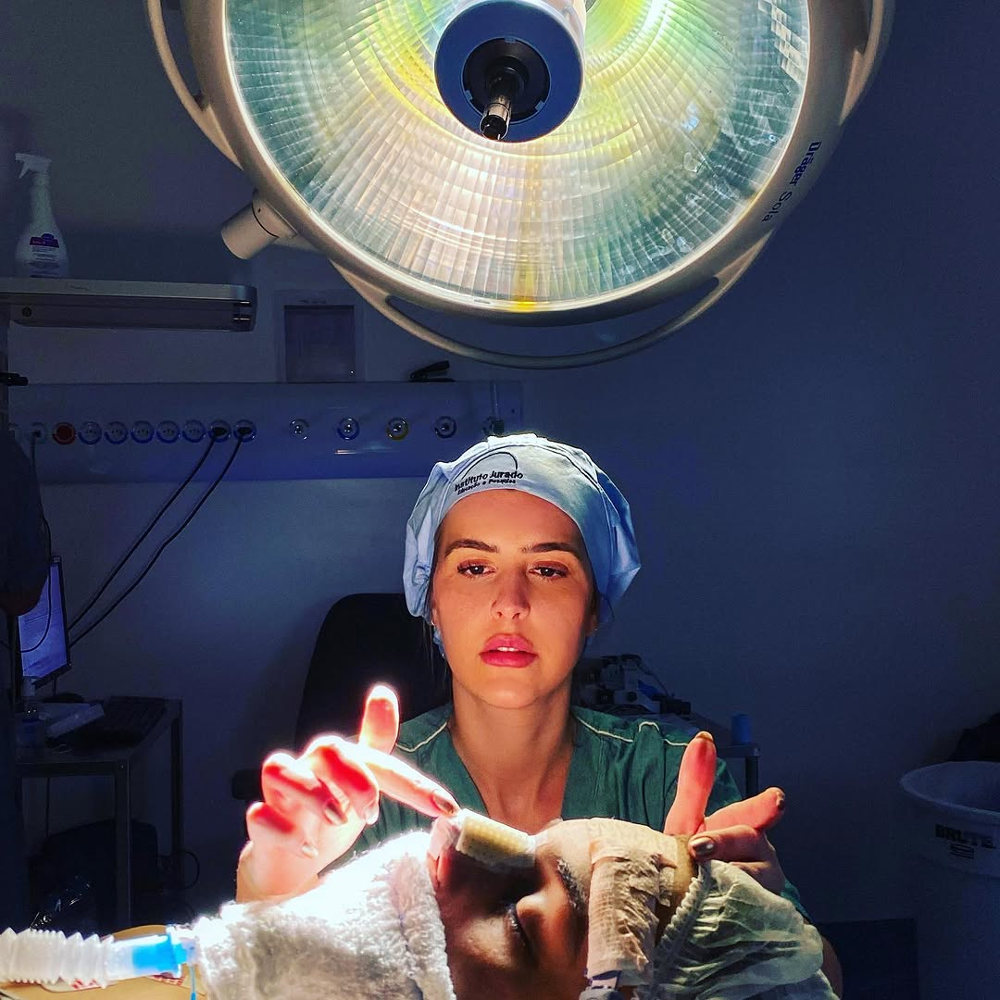

O Espaço
Instituto Inspirare
São Paulo


Da rinoplastia ao tratamento de roncos e apneias — a Dra. Daniela Garcia une técnica cirúrgica refinada e atendimento humanizado para transformar sua qualidade de vida.
CRM-SP 170913 · RQE 89966 · Otorrinolaringologista

A Dra. Daniela Garcia é otorrinolaringologista formada com especialização em rinoplastia funcional e estética, atuando no Instituto Inspirare em São Paulo. Com uma abordagem que combina rigor científico e sensibilidade humana, oferece tratamentos personalizados para cada paciente.
Sua clínica — referência em otorrinolaringologia e rinoplastia em São Paulo — foi projetada para proporcionar conforto e confiança em cada etapa do cuidado com a saúde.
CRM-SP 170913 · RQE 89966 — Médica registrada no Conselho Regional de Medicina de São Paulo
Especialista em Rinoplastia — Cirurgia funcional e estética do nariz com resultados naturais
Instituto Jurado — Educação e Pesquisa — Formação contínua e atualização técnica constante
Soluções completas em otorrinolaringologia para crianças e adultos — do diagnóstico ao pós-operatório em São Paulo.
Cirurgia estética e funcional do nariz. Correção de imperfeições visuais e problemas respiratórios com resultados naturais e duradouros.
Correção cirúrgica do septo nasal desviado. Melhora significativa na respiração, qualidade do sono e bem-estar geral.
Diagnóstico e tratamento clínico ou cirúrgico para rinite alérgica, sinusite crônica e pólipos nasais — livres dos sintomas persistentes.
Avaliação completa de distúrbios do sono em adultos e crianças. Tratamentos cirúrgicos e conservadores para ronco e apneia obstrutiva.
Cirurgia para reposicionamento de orelhas proeminentes. Procedimento seguro, com resultados harmoniosos e cicatrização discreta.
Tratamento especializado para crianças com respiração bucal, hipertrofia de adenoide e amígdalas. Recupere a respiração saudável.
"A Dra. Daniela é extremamente atenciosa e competente. Minha rinoplastia superou todas as expectativas — resultado natural e recuperação tranquila."
"Sofria com apneia há anos. Após o tratamento com a Dra. Daniela, minha qualidade de sono melhorou completamente. Consultório lindo e equipe incrível."
"Corrigi o desvio de septo e nunca mais tive crises de sinusite. Atendimento humanizado, desde a consulta até o pós-operatório. Recomendo demais!"